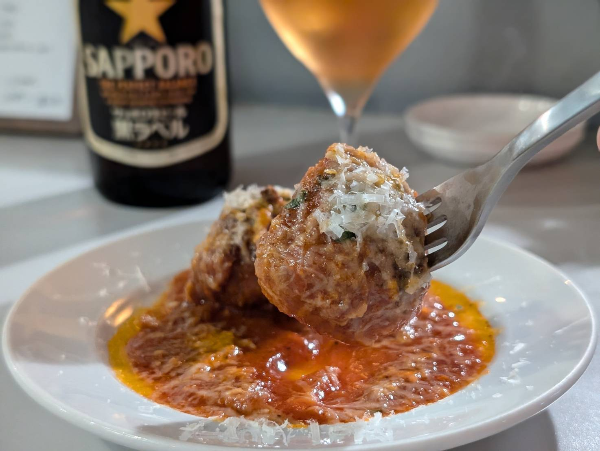
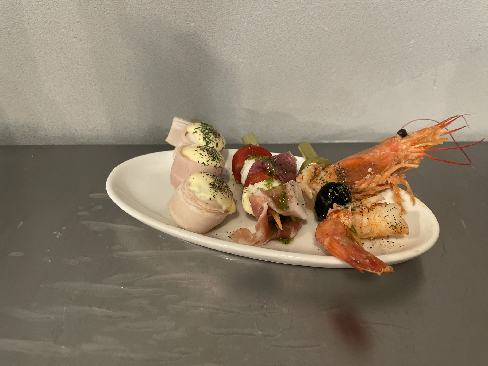

HOME / SMALL PLATES
ワインをひと口。おつまみをひと口。そんな夜のおともに。

OUR SPECIALTY
トマトソースで煮込んだ洋風肉団子に、ペコリーノチーズ。やわらかな食感とスパイスの香りを楽しめる、よいコの名物です。

PINCHOS
少しずつ、いろいろ。お酒を片手につまみたいピンチョスも、よいコの楽しみ。写真は提供例です。
SOMETHING TO SHARE
小さな串に、おいしさをぎゅっと。グラスを片手に気軽につまめる一品。
その日に出会える味も楽しみのひとつ。今日のおすすめは、店内でお声がけください。
お料理の内容・価格は店頭のメニューをご確認ください。仕入れにより内容が変わる場合があります。
NO RESERVATIONS. JUST DROP IN.
ご予約は承っておりません。ふらっと、そのままお越しください。